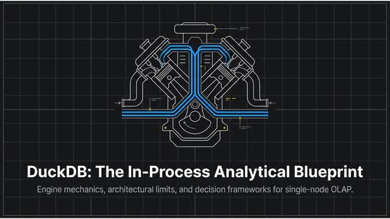

Skip to content
Learn DuckDB: Architect Study Console
Learning Deep Dive · DuckDB sources

Console v2.0
Learn DuckDB
Learning Deep Dive
Search views, terms, notes
Ctrl K
▪
Today
Learn
▪
Curriculum
▪
Architecture views
▪
Shorts
▪
Deck and deep-dive cut
▪
Library (all notes)
Practice
▪
Flashcards
▪
Quiz
▪
Failure modes
▪
Prompts
Reference
▪
Decision rules
▪
Progress map
▪
Glossary
▪
EA mapping
▪
Debates
▪
Source ledger
▪
Overview
🌙
Dark
Grounded in the DuckDB source ledger. No tenant data, passwords, or API keys on this site.
Canonical path: Obsidian
Learning/one-day-mastery/duckdb/
.
Learn DuckDB
Today
Shorts
Practice
Learn
More
↑
↓
move ·
Enter
open ·
Esc
close
Personal study material. Every claim traces to a row in the DuckDB source ledger (
S#
links open the source). NotebookLM media is secondary. A local DuckDB binary is not permission to process classified data.